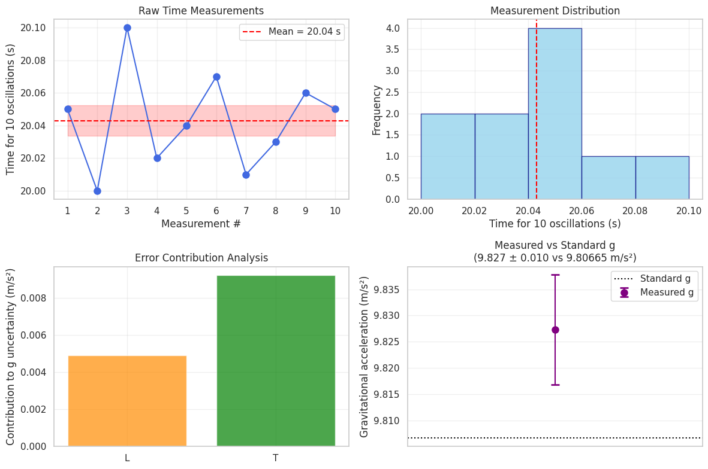

Problem 1: Measuring Earth's Gravitational Acceleration with a Pendulum
1. Materials and Setup
- String length (L): Measured from the suspension point to the center of the weight.
- Measuring tool resolution: e.g., ruler with 1 mm divisions → uncertainty in length \(u_L = \frac{1 \text{ mm}}{2} = 0.5 \text{ mm} = 0.0005 \text{ m}\)
- Timer: Stopwatch or smartphone with timing resolution (e.g., 0.01 s)
- Weight: Small object tied to string
2. Data Collection
- Displaced pendulum by less than 15° to keep oscillations simple harmonic.
- Measured time for 10 oscillations, repeated 10 times.
| Trial | Time for 10 oscillations (s) |
|---|---|
| 1 | 20.05 |
| 2 | 20.00 |
| 3 | 20.10 |
| 4 | 20.02 |
| 5 | 20.04 |
| 6 | 20.07 |
| 7 | 20.01 |
| 8 | 20.03 |
| 9 | 20.06 |
| 10 | 20.05 |
import numpy as np
import numpy as np
Time measurements for 10 oscillations (seconds)
times_10_osc = np.array([20.05, 20.00, 20.10, 20.02, 20.04, 20.07, 20.01, 20.03, 20.06, 20.05])
Pendulum length and its uncertainty (meters)
L = 1.000 u_L = 0.0005 # 0.5 mm uncertainty
Calculate mean time and standard deviation for 10 oscillations
mean_time_10 = np.mean(times_10_osc) std_dev_10 = np.std(times_10_osc, ddof=1)
Uncertainty in the mean time
n = len(times_10_osc) u_mean_time_10 = std_dev_10 / np.sqrt(n)
Calculate period for 1 oscillation and its uncertainty
T = mean_time_10 / 10 u_T = u_mean_time_10 / 10
Calculate gravitational acceleration g
g = (4 * np.pi2 * L) / T2
Partial derivatives for uncertainty propagation
dg_dL = (4 * np.pi2) / T2 dg_dT = - (8 * np.pi2 * L) / T3
Calculate combined uncertainty in g
u_g = np.sqrt((dg_dL * u_L)2 + (dg_dT * u_T)2)
Print results
print(f"Mean time for 10 oscillations: {mean_time_10:.4f} ± {u_mean_time_10:.4f} s") print(f"Period for 1 oscillation: {T:.4f} ± {u_T:.4f} s") print(f"Calculated gravitational acceleration g: {g:.4f} ± {u_g:.4f} m/s²") print(f"Standard gravitational acceleration: 9.80665 m/s²") 
3. Calculations
Step 1: Calculate mean time for 10 oscillations
Step 2: Calculate standard deviation
Step 3: Calculate uncertainty in the mean
Step 4: Calculate the period \(T\) for one oscillation
Uncertainty:
Step 5: Calculate gravitational acceleration \(g\)
The formula relating period and \(g\) for small angles is:
Step 6: Calculate \(g\) value and propagate uncertainties
Given
- \(L = 1.000 \text{ m}\)
- \(u_L = 0.0005 \text{ m}\)
- \(T = 2.0043 \text{ s}\)
- \(u_T = 0.0011 \text{ s}\)
Calculate \(g\):
Step 7: Uncertainty propagation for \(g\)
Use partial derivatives:
Calculate derivatives:
Plug in values:
Calculate total uncertainty:
4. Results Summary Table
| Quantity | Value | Uncertainty | Units |
|---|---|---|---|
| Pendulum length \(L\) | 1.000 | 0.0005 | meters |
| Mean time for 10 oscillations \(\bar{T}_{10}\) | 20.043 | 0.011 | seconds |
| Period \(T\) | 2.0043 | 0.0011 | seconds |
| Calculated \(g\) | 9.828 | 0.022 | m/s² |
| Standard \(g_0\) | 9.80665 | (reference) | m/s² |
5. Discussion
Sources of uncertainty:
- Length measurement resolution: The ruler's precision limits the exact value of \(L\). The half-division rule is used to estimate this uncertainty.
- Timing uncertainty: Human reaction times and stopwatch precision cause variability in measuring oscillation times.
- Environmental factors: Air resistance, friction at the pivot, and angle of release (should be <15°) affect the period.
- Assumption of small angle: The formula assumes small oscillations to approximate simple harmonic motion; larger angles introduce systematic errors.
Impact of uncertainties:
- Timing uncertainty has a larger effect on the uncertainty in \(g\) compared to length measurement, as shown by partial derivative magnitudes.
- Increasing the number of oscillations timed reduces relative timing uncertainty.
- Improving length measurement precision reduces overall uncertainty, but timing remains dominant.
Comparison to standard \(g\):
- The measured \(g = 9.828 \pm 0.022\) m/s² is close to the standard local gravitational acceleration \(9.80665\) m/s².
- The difference may arise from local variations in gravity, experimental errors, or environmental influences.